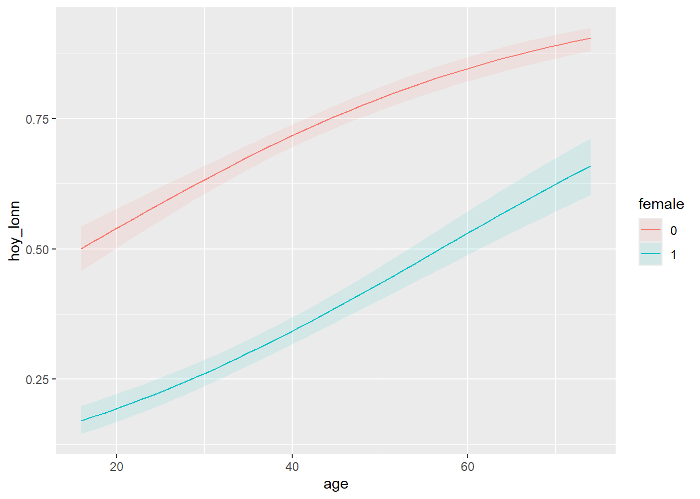
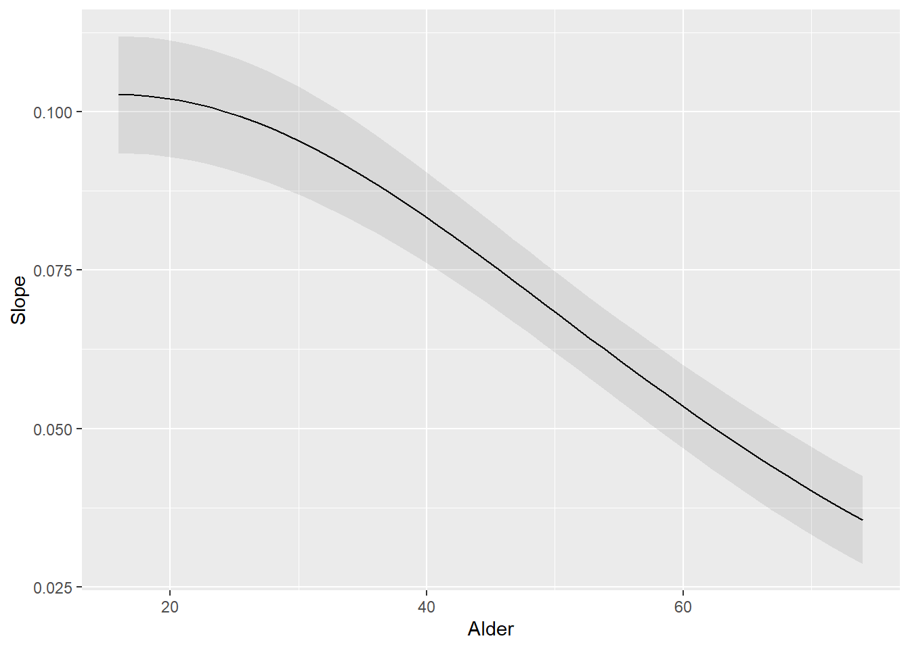
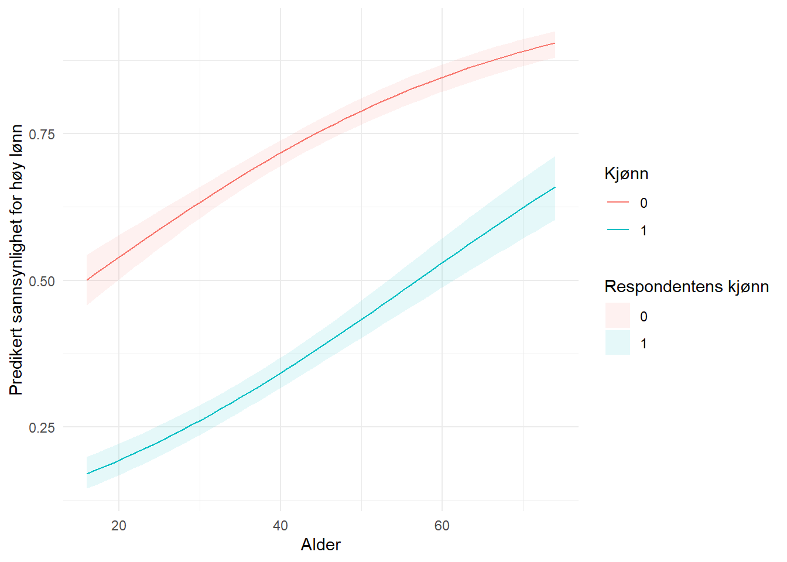

library(tidyverse)
library(haven)
library(marginaleffects)16 Marginaleffekter
I de foregående kapitlene har vi sett på lineær regresjon og logistisk regresjon. I lineær regresjon er regresjonskoeffisientene greie å tolke direkte: de uttrykker endring i gjennomsnittlig verdi på utfallsvariabelen per enhets endring i forklaringsvariabelen. Men i logistisk regresjon er koeffisientene på log-odds-skalaen, og det er ikke spesielt intuitivt. Vi kan eksponentiere til oddsratioer, men det er heller ikke alltid lett å forklare hva en oddsratio betyr i praksis.
Her kommer marginaleffekter inn i bildet. Marginaleffekter lar oss uttrykke effekten av en forklaringsvariabel som endring i sannsynlighet, noe som er langt mer intuitivt. Pakken {marginaleffects} gir oss et samlet rammeverk for å beregne marginaleffekter, predikerte verdier og sammenligninger mellom grupper. Hvis du ikke har installert pakken fra før:
install.packages("marginaleffects")16.1 Eksempelmodeller
Vi trenger noen modeller å jobbe med. La oss estimere en lineær modell for timelønn og en logistisk modell for sannsynligheten for å ha høy lønn. Først lager vi en dummy for høy lønn, definert som timelønn over medianen.
abu89 <- abu89 %>%
filter(!is.na(time89)) %>%
mutate(hoy_lonn = ifelse(time89 > median(time89, na.rm = TRUE), 1, 0))Så estimerer vi to modeller:
lm_mod <- lm(time89 ~ age + female + ed, data = abu89)
logit_mod <- glm(hoy_lonn ~ age + female + ed,
data = abu89, family = binomial)I den lineære modellen kan vi lese koeffisientene direkte, men i den logistiske modellen er koeffisientene på log-odds-skalaen:
coef(logit_mod)(Intercept) age female ed
-1.84743222 0.03867057 -1.58421620 0.41064784 Det er her marginaleffekter kommer inn.
16.2 Gjennomsnittlige marginaleffekter (AME)
Den vanligste bruken er å beregne Average Marginal Effects (AME). Det betyr at vi beregner den marginale effekten for hver observasjon og tar gjennomsnittet. Funksjonen avg_slopes() gjør nettopp dette.
avg_slopes(logit_mod)
Term Contrast Estimate Std. Error z Pr(>|z|) S 2.5 % 97.5 %
age dY/dX 0.00693 0.000538 12.9 <0.001 123.7 0.00588 0.00799
ed dY/dX 0.07362 0.002552 28.8 <0.001 605.6 0.06862 0.07862
female 1 - 0 -0.30865 0.014233 -21.7 <0.001 344.0 -0.33655 -0.28076
Type: responseNå er effektene uttrykt som endring i sannsynlighet. For eksempel betyr en effekt av female på -0.10 at kvinner i gjennomsnitt har 10 prosentpoeng lavere sannsynlighet for høy lønn sammenlignet med menn, alt annet likt.
For den lineære modellen gir avg_slopes() de samme verdiene som de vanlige regresjonskoeffisientene, fordi marginaleffekten er lik overalt i en lineær modell:
avg_slopes(lm_mod)
Term Contrast Estimate Std. Error z Pr(>|z|) S 2.5 % 97.5 %
age dY/dX 0.542 0.0332 16.3 <0.001 196.6 0.477 0.607
ed dY/dX 4.874 0.1626 30.0 <0.001 653.0 4.555 5.192
female 1 - 0 -17.601 0.8255 -21.3 <0.001 332.7 -19.219 -15.983
Type: response16.3 Marginaleffekter ved bestemte verdier
Noen ganger vil man vite hva marginaleffekten er ved bestemte verdier av forklaringsvariablene. Funksjonen slopes() gjør dette. Med datagrid() kan vi lage et datasett med bestemte verdier, der variable som ikke spesifiseres holdes på gjennomsnittsverdier.
slopes(logit_mod,
variables = "ed",
newdata = datagrid(age = c(25, 40, 55)))
age Estimate Std. Error z Pr(>|z|) S 2.5 % 97.5 %
25 0.0996 0.00458 21.7 <0.001 344.9 0.0906 0.1085
40 0.0833 0.00366 22.8 <0.001 379.2 0.0761 0.0904
55 0.0608 0.00327 18.6 <0.001 254.2 0.0544 0.0672
Term: ed
Type: response
Comparison: dY/dXHer ser vi at effekten av utdanning varierer med alder. Det er fordi logistisk regresjon er ikke-lineær: den marginale effekten avhenger av hvor på fordelingen man befinner seg.
16.4 Predikerte verdier
I kapittelet om lineær regresjon brukte vi predict() for å beregne predikerte verdier. Pakken {marginaleffects} har tilsvarende funksjoner som gir ryddigere output med konfidensintervaller. Funksjonen predictions() gir predikerte verdier, mens avg_predictions() gir gjennomsnitt per gruppe.
predictions(logit_mod,
newdata = datagrid(age = c(25, 35, 45, 55),
female = c(0, 1)))
age female Estimate Pr(>|z|) S 2.5 % 97.5 %
25 0 0.587 <0.001 22.6 0.555 0.618
25 1 0.226 <0.001 192.5 0.201 0.253
35 0 0.677 <0.001 134.7 0.653 0.700
35 1 0.300 <0.001 144.4 0.276 0.326
45 0 0.755 <0.001 258.0 0.732 0.776
45 1 0.387 <0.001 45.5 0.360 0.415
55 0 0.819 <0.001 267.6 0.795 0.841
55 1 0.482 0.331 1.6 0.445 0.518
Type: invlink(link)Med avg_predictions() kan vi beregne gjennomsnittlig predikert sannsynlighet fordelt på grupper:
avg_predictions(logit_mod, by = "female")
female Estimate Std. Error z Pr(>|z|) S 2.5 % 97.5 %
0 0.660 0.00968 68.2 <0.001 Inf 0.641 0.679
1 0.305 0.00984 31.0 <0.001 700.1 0.286 0.325
Type: response16.5 Sammenligninger mellom grupper
Funksjonen avg_comparisons() beregner gjennomsnittlige forskjeller mellom grupper eller ved endring i en variabel. For eksempel forskjellen mellom menn og kvinner:
avg_comparisons(logit_mod, variables = "female")
Estimate Std. Error z Pr(>|z|) S 2.5 % 97.5 %
-0.309 0.0142 -21.7 <0.001 344.0 -0.337 -0.281
Term: female
Type: response
Comparison: 1 - 0Vi kan også se på effekten av en bestemt endring i en kontinuerlig variabel, for eksempel fra 10 til 15 års utdanning:
avg_comparisons(logit_mod,
variables = list(ed = c(10, 15)))
Estimate Std. Error z Pr(>|z|) S 2.5 % 97.5 %
0.0547 0.00619 8.83 <0.001 59.8 0.0426 0.0668
Term: ed
Type: response
Comparison: 15 - 1016.6 Plotting av marginaleffekter
En stor styrke med {marginaleffects} er enkle og fine plot. Funksjonen plot_predictions() viser predikerte verdier, mens plot_slopes() viser hvordan marginaleffekten varierer.
Her plotter vi predikert sannsynlighet for høy lønn som funksjon av alder, separat for menn og kvinner:
plot_predictions(logit_mod, condition = c("age", "female"))
Den grå sonen viser konfidensintervallet. Vi ser den karakteristiske S-formen fra logistisk regresjon. For den lineære modellen blir linjene rette:
plot_predictions(lm_mod, condition = c("age", "female"))
Med plot_slopes() kan vi visualisere hvordan marginaleffekten av en variabel varierer med en annen:
plot_slopes(logit_mod, variables = "ed", condition = "age")
Siden disse funksjonene returnerer ggplot-objekter, kan de tilpasses med vanlig ggplot-syntaks:
plot_predictions(logit_mod, condition = c("age", "female")) +
labs(x = "Alder",
y = "Predikert sannsynlighet for høy lønn",
color = "Kjønn") +
theme_minimal()
16.7 Sammenhengen med predict()
I kapittelet om lineær regresjon brukte vi predict() for å beregne predikerte verdier. Her er en kort sammenligning:
nyedata <- data.frame(age = 40, female = 0, ed = 12)
# Med predict():
predict(logit_mod, newdata = nyedata, type = "response") 1
0.9903123 # Med predictions():
predictions(logit_mod, newdata = nyedata)
Estimate Pr(>|z|) S 2.5 % 97.5 %
0.99 <0.001 408.6 0.986 0.993
Type: invlink(link)Begge gir samme predikerte verdi, men predictions() gir i tillegg konfidensintervaller og standardfeil. Funksjonen predict() er innebygd i R og fungerer alltid, men {marginaleffects} gir ryddigere output og er enklere for mer avanserte ting.
16.8 Oppsummering
| Funksjon | Hva den gjør |
|---|---|
avg_slopes() |
Gjennomsnittlige marginaleffekter (AME) |
slopes() |
Marginaleffekter ved bestemte verdier |
predictions() |
Predikerte verdier for angitte observasjoner |
avg_predictions() |
Gjennomsnittlige predikerte verdier per gruppe |
avg_comparisons() |
Gjennomsnittlige sammenligninger mellom grupper |
plot_predictions() |
Plot av predikerte verdier |
plot_slopes() |
Plot av marginale effekter |
Hovedpoenget er at marginaleffekter lar oss tolke resultater fra ikke-lineære modeller (som logistisk regresjon) på en intuitiv skala. I stedet for log-odds eller oddsratioer kan vi snakke om endring i sannsynlighet, noe som er langt lettere å forstå.